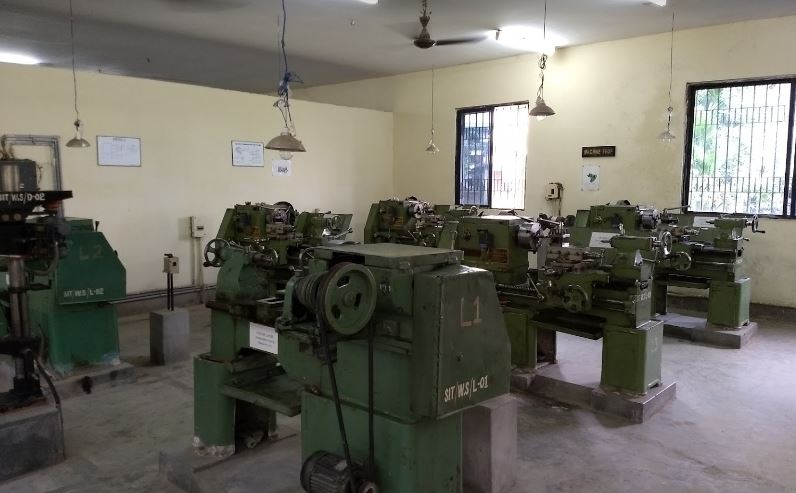

Mechinical Workshop
The knowledge of converting a raw material into a use full product is highly essential for all engineers for familiarizing with concepts. The basic need of Engineering Workshop is to provide theoretical and practical knowledge of manufacturing environment to all the engineering students.
| Sl No. | Name | Contact Number |
|---|---|---|
| 1 | Mr. Bhaskar | +91 973 318 4188 |
Workshop

orkshop Technology is the core of learning about different Materials, equipment, tools and manufacturing practices that are observed in different manufacturing functions and operations in the field of Engineering. Workshop is also of prime importance when you want to gather about the practical knowledge.
At SIT we have a well-equipped workshop practice lab which helps to develop and enhance relevant technical hand skills required for the studentsto work in the various engineering industries and workshops.